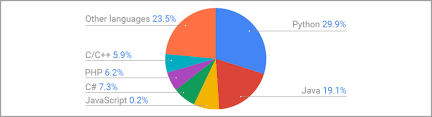
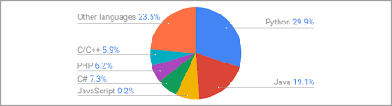
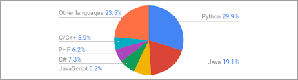

is a formal language comprising a set of strings that produce various kinds of machine code output. Programming languages are one kind of computer language, and are used in computer programming to implement algorithms
| Language | Intended Used | Object Oriented | Functional | Procedural |
|---|---|---|---|---|
| C | Application, system, general purpose, low-level operations | No | No | Yes |
| C++ | Application, system | Yes | Yes | Yes |
| C# | Application, RAD, business, client-side, general, server-side, web | Yes | Yes | Yes |
| PHP | Server-side, web application, web | Yes | Yes | Yes |
